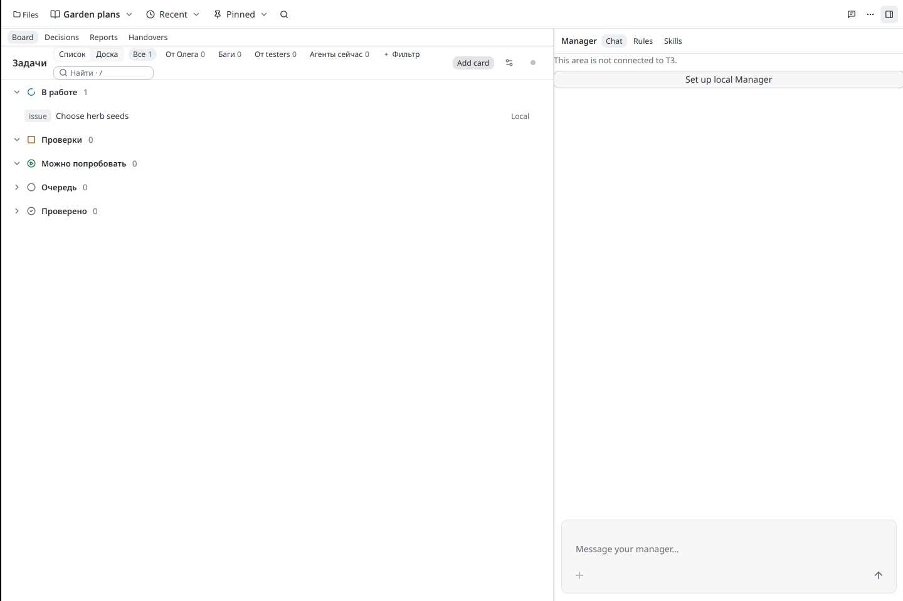

Board keeps local tasks and linked project issues beside your notes. Start with an ordinary vault; a local Board needs no repository or T3 connection.
Create and open
- Open Settings → Features, enable Agents, then close Settings. This reveals Projects, Board and Manager; connecting a Manager is optional.
- If you need a folder, choose New Folder in the app menu and name it. Right-click that folder in Tree and choose Make this a project….
- Keep or edit the project name and kind. Leave Create the project in T3 unchecked for local work. Choose Create project.
- Open the Projects picker in the top bar and select your project. Select its Board tab when returning from Decisions, Reports or Handovers.
- Choose Create board. Keep its title; Goal, Repository and Stage note are optional. Choose Create board again to save. This opens Manage board. For an existing Board, use its Manage board settings button.
Add a card and save a change
- In Manage board, choose Local cards → Add card. Enter a title, such as “Choose herb seeds”. Keep Todo, then choose Save card.
- Beside the saved card, choose Edit, select Doing, then Save card.
- Choose Back to Manage board, then its close button. The card now appears in В работе / In progress. Todo maps to Очередь / Queue; Done maps to Готово / Ready. Queue may be collapsed: click its heading.
- Reopen Manage board → Local cards → Edit to check the saved state.
Cards persist in the project's
board-local.tomlservice file; reopening the project retains the change. New projects keep service files in.okilum.
Done is a manual local state. It does not establish PR/CI success, an installed build or human verification. Local work does not enter Verified automatically.
Find and inspect work
Список / Доска changes the view of the same saved tasks. / focuses search; use part of a title or an issue number. Clear search and selected filters when expected cards are missing. Queue and Verified groups can be collapsed.
Open a linked issue by clicking it, or select it and use Enter / Space. Up / Down selects adjacent issues; Esc returns from the issue panel. Ждёт тебя / Waiting for you appears when the project has a decision, an exact-build try note or a new report requiring attention.
A local Board has no PR/CI evidence. To link issues, add the project's Forgejo repository through Manage board → Board details, then use Link issue. Once bound, the repository cannot be changed because issue numbers belong to it. Manager discussion prepares a draft; review it before choosing Send.
If saving fails
Keep the draft. If another editor changed the source, reopen the form to reload its current revision before trying again. Do not replace the file by hand to bypass an error. A source error remains visible; last loaded cards can be stale.
The bundled video shows a real Linux beta 7764, source
e2a6e8556aa2b974a0ddd4012b93ec77d746bfd7, using a private practice vault.
Its cursor and captions show every create/open step and a persisted Todo → Doing
change. It is a tutorial, not a timing measurement or human acceptance.
